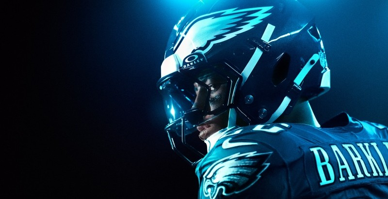

Odds Dinâmicas
As cotações mudam a cada segundo. Se o favorito sofre um gol inesperado, a odd para a virada sobe drasticamente, oferecendo oportunidades de lucro que não existiam antes do apito inicial
O lance é seu e o lucro é nosso!

Apostar ao vivo é como estar dentro de campo, mas com o poder de influenciar o resultado do seu próprio palpite. Diferente das apostas pré-jogo, onde tudo se baseia em estatísticas passadas, o live betting é puro instinto e leitura de jogo em tempo real.
As cotações mudam a cada segundo. Se o favorito sofre um gol inesperado, a odd para a virada sobe drasticamente, oferecendo oportunidades de lucro que não existiam antes do apito inicial
Você percebe que um time está pressionando ou que um jogador importante parece cansado? No ao vivo, você usa essa percepção para antecipar o próximo escanteio, cartão ou gol.
A ferramenta de encerrar a aposta permite que você garanta um lucro parcial ou minimize uma perda antes mesmo do jogo acabar, dando total controle sobre o seu dinheiro.